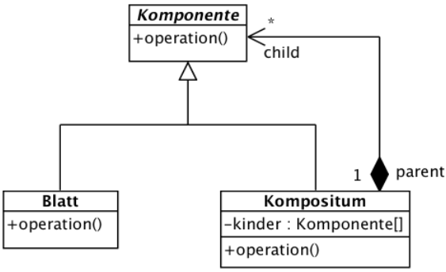

{% extends "../_base_template.html" %}
{% block title %}Lektion 11 - Design Pattern - Composite{% endblock %}

{% block sections %}
<section data-markdown>
<textarea data-template>
<i class="fas fa-flask"></i> Besprechung Hausaufgaben: MVC
=============================

Besprechen / Zeigen der Aufgabe Person-Eingabe-Maske


</textarea>
</section>

<section data-markdown>
<textarea data-template>
<i class="fas fa-graduation-cap"></i> Design Pattern: Composite
=============================

Heutiges Ziel
-------------

* Sie kennen das Composite-Design Pattern
* Sie können das Composite-Design-Pattern im Code anwenden

</textarea>
</section>

<section data-markdown>
<textarea data-template>
<i class="fas fa-graduation-cap"></i> Problematik: Hierarchien von Objekten mit gleicher Funktionalität
=============================

Sie haben die Aufgabe, UI-Klassen für unser Bibliothekssystem zu entwickeln. Unsere Textmasken bestehen immer
wieder aus ähnlichen Elementen:

* Textfelder, welche Text ausgeben können
* Input-Felder mit einem Label (also z.B. "Login:") und einer Eingabemöglichkeit
* Layout: Es gibt "Fenster-" oder "Rahmen"-Elemente, welche anderer Elemente (Text- und Inputfelder) beinhalten können
  und dem Layout der Maske dienen
  Eine Maske kann dann aus mehreren Elementen und/oder Rahmen-Elemente bestehen
* So entsteht eine Element-Hierarchie.

Beispiel: Eine Maske besteht aus folgenden Elementen:

```
+---------------------------------Fenster+-----------------------+
|                                                                |
| +---Ausgeliehen: ID 1+-----------+ +--Ausgeliehen: ID 2------+ |
| |                                | |                         | |
| |                                | |                         | |
| |  Titel: Ein Haus am See        | |  Titel: Perry Rhodan    | |
| |                                | |                         | |
| |                                | |                         | |
| +--------------------------------+ +-------------------------+ |
|                                                                |
| 0: zurück                                                      |
| Ihre Wahl: ____                                                |
|                                                                |
+----------------------------------------------------------------+
```

Zum "Zeichnen" einer Maske müssen schlussendlich alle Elemente aufgerufen / gezeichnet werden, also die ganze Hierarchie "abgearbeitet" werden.

**Aufgabe**: Überlegen Sie sich eine Programmstruktur, um dieses Problem abzubilden. Wie würden Sie
dies umsetzen? --> Erstellen Sie ein kleines Beispiel, wenn Sie eine Idee haben!
</textarea>
</section>

<section data-markdown>
<textarea data-template>
<i class="fas fa-graduation-cap"></i> Lösung: Das Composite-Design-Pattern
=============================

Das Composite-Pattern löst das Problem, in dem es Komponenten definiert, die wiederum ein Kompositum (zusammengesetzte Komponente) sein können:

Dies wird über ein gemeinsames Interface erreicht, welches die Komponenten und die Composite-Komponenten implementieren:



Das Komponenten-Interface definiert gemeinsame Operationen, welche sowohl für einfache Komponenten wie auch Komposit-Komponenten gilt.
Aus Sicht des Anwenders verhalten sich so einfache Komponenten gleich wie Komposit-Komponenten. Die Komposit-Komponenten sorgen dann
intern dafür, dass die notwendigen Operationen weitergegeben werden.

Ein Merkblatt zum Thema Composite-Pattern finden Sie hier:

https://moodle.bztf.ch/pluginfile.php/34455/mod_folder/content/0/Merkblatt%20Design%20Pattern%20Composite.pdf?forcedownload=1

Weitere Infos zum Composite-Pattern finden Sie hier: https://www.philipphauer.de/study/se/design-pattern/composite.php

</textarea>
</section>

<section data-markdown>
<textarea data-template>
<i class="fas fa-graduation-cap"></i> Anwendungsbeispiel: HTML-Element-Struktur
=============================

HTML ist eine hierarchische Struktur:

```
<html>
    <body>
        <div>
            <p>Hallo. Klicke auf <a href="https://badwebsite.org">diesen Link!</a></p>
        </div>
    </body>
</html>
```

Wir sehen hier einfache Komponenten: Texte innerhalb von Tags ,und Komposit-Komponenten: Tags wie p, div, a etc.

Es sollen nun diese HTML-Elemente als Klassen implementiert werden, sodass der HTML-Baum aufgebaut und ausgegeben werden kann, und zwar unter Zuhilfenahme des Komposite-Patterns:

Das Komponenten-Interface definiert eine `print()`-Methode, welche die Komponente ausgibt (als String ausgibt).

```java
interface HtmlNode {
    public void print(int ident);
}
```

Implementieren Sie nun als Übung folgende Klassen, welche das Komposite-Pattern umsetzen:

* `Text`: einfache Text-Nodes, wie z.B. "Hallo, klicke auf"
* `HtmlTag`: implementiert den `<html>`-Tag
* `BodyTag`: implementiert den `<body>`-Tag
* `DivTag`: implementiert den `<div>`-Tag
* `PTag`: implementiert den `<p>`-Tag
* `ATag`: implementiert den `<a>`-Tag

Überlegen Sie:

* welche der Komponenten sind einfache, welche Komposite-Komponenten?
* Was müssen die Komposite-Komponenten zusätzlich für Funktionalitäten implementieren, damit der HTML-Baum aufgebaut werden kann?
* Wo sehen Sie Verbesserungs- und/oder Vereinfachungs-Möglichkeiten (Hint: DRY-Prinzip)?

Ziel ist, dass Sie den oben aufgezeigten HTML-Code als Baum von `HtmlNode`-Objekten abbilden und ausgeben können.

**Zeit**: bis ca. 15min vor Schluss, dann besprechen wir Ihren Ansatz. Rest als Hausaufgabe.
</textarea>
</section>

<section data-markdown>
<textarea data-template>
<i class="fas fa-graduation-cap"></i> HA: XML-Export von Bibsys-Daten
=============================

Die Buchhaltung unserer Bibliothek benötigt die Daten für die Rechnungsstellung als XML, damit aus diesen Daten automatisch
Rechnungen erstellt werden können. Wir müssen in etwa folgende Struktur als XML exportieren können:

<pre><code class="lang-xml hljs" style="font-size: 5pt !important;line-height: 5pt !important"><?xml version="1.0" encoding="UTF-8" ?>
<rechnungen>
    <rechnung>
        <rechnungNr>1234</rechnungNr>
        <rechnungDatum>2019-08-04</rechnungDatum>
        <typ>mahnung</typ>
        <betrag>12.50</betrag>
        <benutzer>
            <login>User1</login>
            <istBibMitarbeiter>true</istBibMitarbeiter>
            <person>
                <name>Schenkel</name>
                <vorname>Alexander</vorname>
                <email>alex@alexi.ch</email>
                <adresse>.......</adresse>
            </person>
        </benutzer>
    </rechnung>
    <rechnung>
        <rechnungNr>1235</rechnungNr>
        <rechnungDatum>2019-03-04</rechnungDatum>
        <typ>gebuehr</typ>
        <betrag>25.00</betrag>
        <benutzer>
            <login>User2</login>
            <istBibMitarbeiter>false</istBibMitarbeiter>
            <person>
                <name>Norris</name>
                <vorname>Chuck</vorname>
                <email>chuck@norris.com</email>
                <adresse>.......</adresse>
            </person>
        </benutzer>
    </rechnung>
</rechnungen></code></pre>

Als Anwender möchte ich das XML folgendermassen erzeugen können:

```java
List<Rechnung> rechnungen = hole_die_rechnungen_irgendwie();

RechnungXmlGenerator rg = new RechnungXmlGenerator();
String xml = rg.createXml(rechnungen);
```

Es muss also aufgrund einer Liste von Rechnungen die oben gezeigte Struktur abgebildet werden können.
Wenden Sie das Composite-Pattern an, um diese Hierarchie abzubilden:

* Zeichnen Sie das UML-Klassendiagramm aller involvierten Klassen und Interfaces, auch den zusätzlich benötigten Klassen, die Sie erstellen.
* Setzen Sie diese Anforderung mit unserem BibSys-Prototypen um. Verwenden Sie dazu das Composite-Pattern.
* Zeigen Sie die Funktionsweise in einem Testprogramm!

Abgabe: Das funktionierende Gesamt-Projekt.
</textarea>
</section>
{% endblock %}
